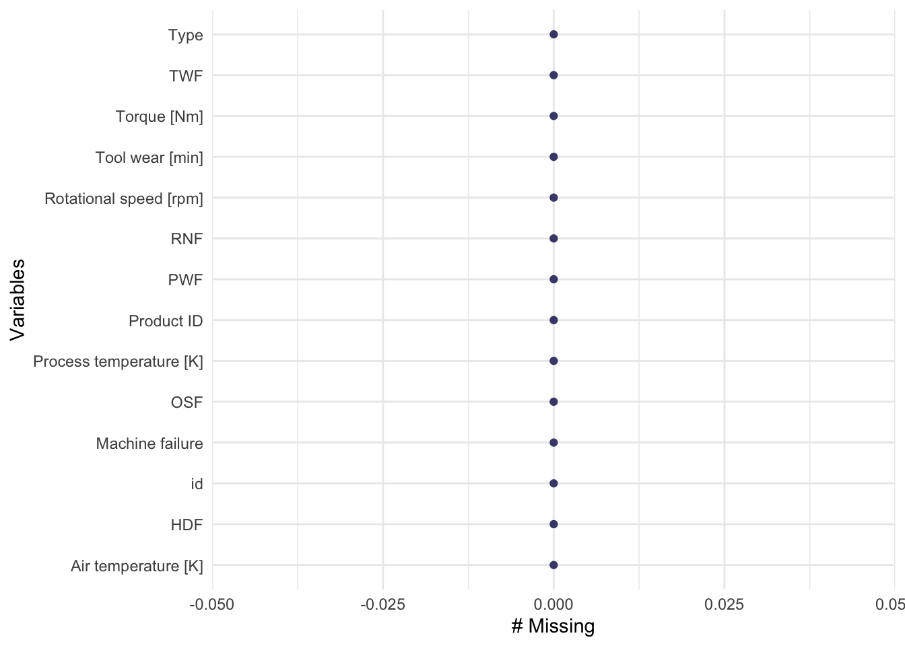
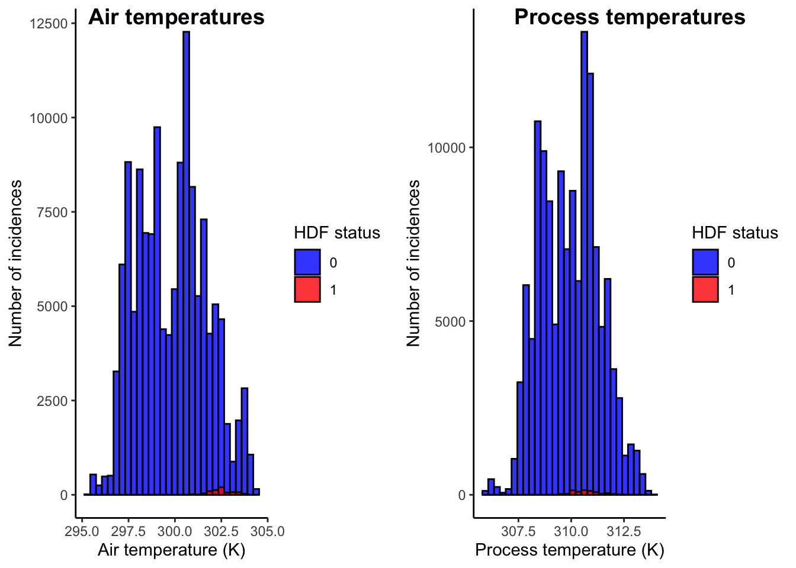
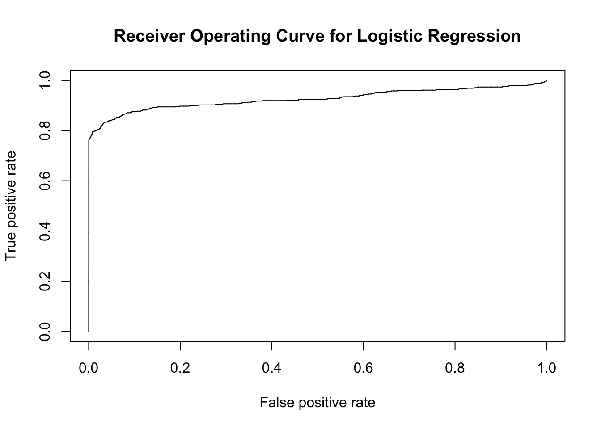
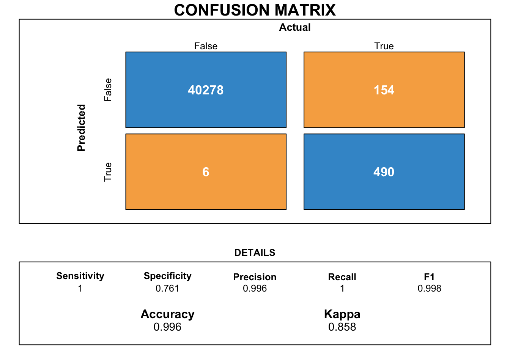
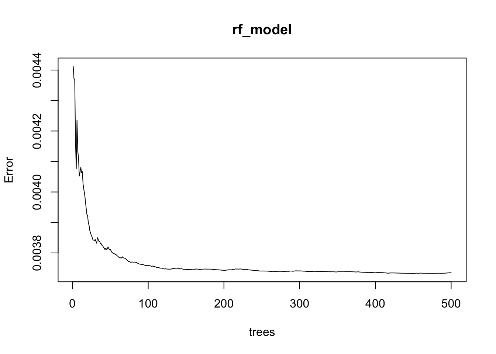
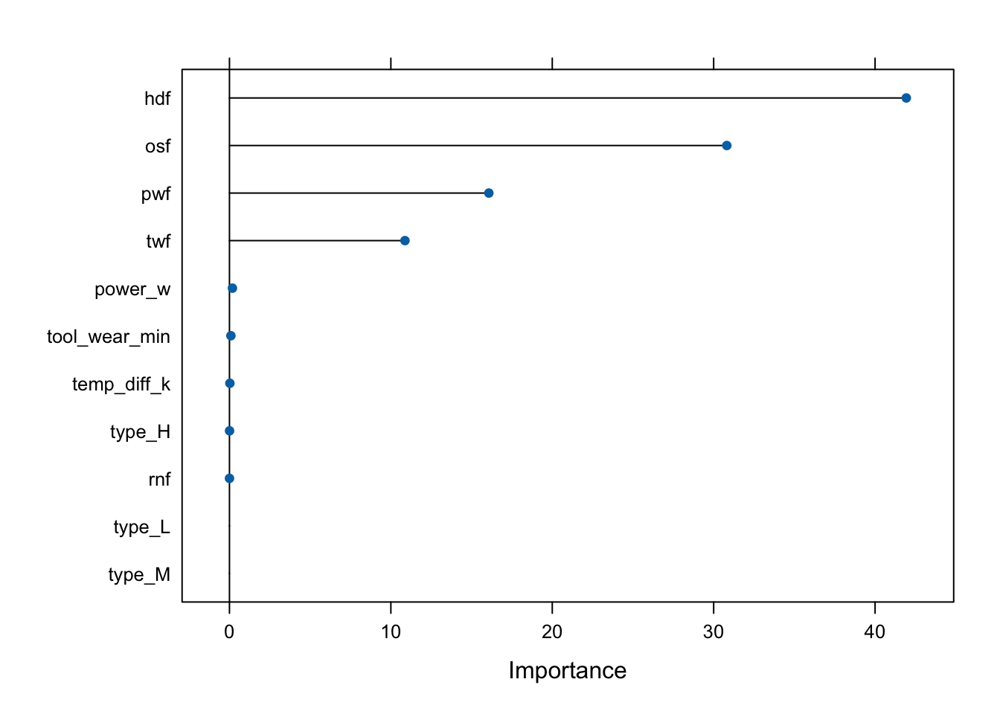

knitr::include_graphics("mach_failure.jpeg")
Binary machine failure prediction using machine learning is a technique employed to anticipate the occurrence of failures or malfunctions in a binary system or machine. With the increasing complexity of modern machines, the ability to predict and prevent failures becomes crucial for optimizing performance, reducing downtime, and avoiding costly repairs.
Machine learning algorithms play a vital role in this prediction process by analyzing historical data and identifying patterns or anomalies that indicate potential failures. These algorithms learn from past failure instances, considering various factors such as sensor readings, environmental conditions, maintenance records, and other relevant parameters.
The predictive models are trained on labeled datasets, where each instance is associated with a failure or non-failure outcome. Common machine learning techniques used for binary machine failure prediction include logistic regression, decision trees, random forests, support vector machines (SVM), and neural networks.
During the training phase, the algorithms learn the relationships between input features and failure occurrences, thereby enabling them to make accurate predictions on unseen data. Feature engineering, which involves selecting or transforming relevant input variables, is an essential step in improving the model’s performance.
Once the model is trained, it can be deployed to make real-time predictions on new data streams. By continuously monitoring machine inputs and comparing them to the learned patterns, the system can generate alerts or take preventive actions whenever a potential failure is detected. This proactive approach helps minimize unexpected downtime, reduce maintenance costs, and improve overall operational efficiency.
Binary machine failure prediction using machine learning is widely applied across various industries, including manufacturing, power generation, healthcare, transportation, and more. By leveraging the power of data and advanced analytics, it offers a valuable tool for optimizing maintenance strategies, enhancing productivity, and ensuring the reliability of critical systems.
knitr::include_graphics("mach_failure.jpeg")
First, we import the required libraries which we will use to perform the current analysis.
library(tidyverse)
library(naniar)
library(bookdown)
library(stringr)
library(stringi)
library(lubridate)
library(DT)
library(forcats)
library(ggthemes)
library(corrplot)
library(mltools)
library(data.table)
library(visdat)
library(janitor)
library(cowplot)
library(caTools)
library(pscl)
library(ROCR)
library(caret)
library(xgboost)
library(randomForest)
library(lightgbm)
library(Matrix)
library(catboost)
library(magrittr)
library(fmsb)Great ! We have all the libraries loaded. Next, we are gonna load the required dataset for conducting the machine failure classification analysis.
We will use one dataset for the purpose of exploratory data analysis and training the classification model while the test dataset for testing the classification model on a completely new dataset.
After reading the data, let us see how the train dataset looks like.
df_train <- read_csv("data/train.csv")
df_test <- read_csv("data/test.csv")
head(df_train)# A tibble: 6 × 14
id `Product ID` Type `Air temperature [K]` `Process temperature [K]`
<dbl> <chr> <chr> <dbl> <dbl>
1 0 L50096 L 301. 310.
2 1 M20343 M 303. 312.
3 2 L49454 L 299. 308.
4 3 L53355 L 301 311.
5 4 M24050 M 298 309
6 5 M24300 M 298. 309.
# ℹ 9 more variables: `Rotational speed [rpm]` <dbl>, `Torque [Nm]` <dbl>,
# `Tool wear [min]` <dbl>, `Machine failure` <dbl>, TWF <dbl>, HDF <dbl>,
# PWF <dbl>, OSF <dbl>, RNF <dbl>We can observe that there are multiple process parameters present in the dataset which can help us analyse whether a machine undergoes failure. We can also observe that there are multiple abbreviations in this dataset. Let us try to understand what do these abbreviations mean :
As a part of checking for the cleanliness of the dataset, let us visaulise the presence of null values for each of the variables.
gg_miss_var(df_train)
As we can observe from figure @ref(fig:missvis), there are no missing values for any of the variables in the dataset. As a result, the dataset can be considered clean for further analysis.
After studying for the presence of null values, we now remove the variables that do not provide any extra insights into our analysis.
df_train <- df_train %>% select(-c(id,`Product ID`))The current dataset contains variable names which are not ideal for data wrangling and EDA. Hence, we will try to remove any unnecessary white space and special characters for each of the variable names.
df_train <- clean_names(df_train)
head(df_train)# A tibble: 6 × 12
type air_temperature_k process_temperature_k rotational_speed_rpm torque_nm
<chr> <dbl> <dbl> <dbl> <dbl>
1 L 301. 310. 1596 36.1
2 M 303. 312. 1759 29.1
3 L 299. 308. 1805 26.5
4 L 301 311. 1524 44.3
5 M 298 309 1641 35.4
6 M 298. 309. 1429 42.1
# ℹ 7 more variables: tool_wear_min <dbl>, machine_failure <dbl>, twf <dbl>,
# hdf <dbl>, pwf <dbl>, osf <dbl>, rnf <dbl>After obtaining the cleansed dataset, we now try to visualise the relationship of each of the variables and attempt to obtain critical insights.
There are a total of 3 types machines in this dataset. These are encoded as:
Let us see the number of machine failures for each of the machine types.
facet_lookup <- c("H" = "Heavy (H)","L"= "Light (L)","M" = "Medium (M)")
df_type_group <- df_train %>% group_by(type,machine_failure) %>% summarise(count = n())
df_type_group <- df_type_group %>% group_by(type) %>% mutate(total = sum(count))
df_type_group <- df_type_group %>% mutate(percentage = 100 * (count/total))
pl1 <- ggplot(data = df_type_group,
aes(x = factor(machine_failure),
y = count)) + geom_col(aes(fill = type),color='black') + facet_wrap(~type,
labeller = as_labeller(facet_lookup)) + geom_label(aes(label = count)) + labs(x = "Machine failure status",
y = "Number of incidents") + ggtitle("Number of machine failures for each type") + theme_classic() + theme(legend.position = 'none')
pl1
Figure @ref(fig:failtype) illustrates the number of failures observed for each machine type. The failures constitute:
- 1 % of the incidents for machine type “H”
- 2 % of the incidents for machine type “L”
- 1 % of the incidents for machine type “M”
📵 Hence, we can observe that the number of failure cases are fairly evenly distributed among each of the machine types. 📵 .
Temperatures can play a critical role in relation to machine health. In this dataset, we have air and process temperatures. The difference of these values could allow us to understand the overall heat dissipation of the machines. Analysing these variables may allow us when do the machines undergo overall failure as well as heat dissipation failure (HDF).
Leet us first study the distribution of the temperature values.
pl2 <- ggplot(data = df_train,
aes(x = process_temperature_k,
fill = factor(hdf)),
alpha = 0.6) + geom_histogram(alpha = 0.8,
position = 'identity',color='black') + scale_fill_manual(values = c("blue", "red")) + theme_classic() + labs(x = "Process temperature (K)" , y = "Number of incidences", fill = 'HDF status')
pl3 <- ggplot(data = df_train,
aes(x = air_temperature_k,
fill = factor(hdf))) + geom_histogram(alpha = 0.8,
position = 'identity',color='black') + scale_fill_manual(values = c("blue", "red")) + theme_classic() + labs(x = "Air temperature (K)" , y = "Number of incidences", fill = 'HDF status')
plot_grid(pl3,pl2, labels = c("Air temperatures","Process temperatures"))
As we can observe from @ref(fig:temps), majority of the heat dissipation failures have occurred at relatively higher values of air temperatures. These air temperatures are observed to be around 302.5 K. Higher air temperatures invariably leads to lower value of heat dissipation which may cause heat dissipation failure and subsequently, machine failure.
Heat dissipation values are governed by the following heat transfer equation.
\[ \boxed{\Delta H = mC_p(T_{process} - T_{air})}\] Based on the above equation, let us now study how the difference between process and air temperatures vary for heat dissipation failures.
df_temp_diff <- df_train %>% select(c(process_temperature_k,air_temperature_k,hdf)) %>% mutate(temp_diff = process_temperature_k - air_temperature_k)
pl4 <- ggplot(data = df_temp_diff,
aes(x = temp_diff,
fill = factor(hdf)),
alpha = 0.6) + geom_histogram(alpha = 0.8,
position = 'identity',color='black') + scale_fill_manual(values = c("blue", "red")) + theme_classic() + labs(x = "Temperature difference (K)" , y = "Number of incidences", fill = 'HDF status') + ggtitle("Heat dissipation failure based on temperature difference") +
annotate("segment",x = 5,
y = 2500,xend = 7 ,
yend = 5 ,arrow = arrow(type = "closed",
length = unit(0.02, "npc"))
) +
annotate("text",x = 5,
y = 3800,colour = "red",
label = 'High chances of HDF \n due to low temperature difference',
size = unit(3, "pt")) + theme(axis.text.x = element_text(angle = 10,face = 'bold'))
pl4
As illustrated by figure @ref(fig:tempdiff) and based on the heat transfer equation, we can observe that
⚠️ the majority of the heat dissipation failures occur at low temperature differences between process and air temperatures. ⚠️ .
The torque of a machine can be defined as the amount of rotational energy required to perform mechanical work. As a result of torque applied, a machine element, such as the tool in this case rotates at a particular speed. This speed of rotation is measured by the tool rotation speed in revolutions per minute (RPM).
In addition to the above definitions, the product of the torque and the tool rotation speeds give us the value of the power consumption of a machine. The equaiton for the same is as follows :
\[ \boxed{P = \omega T} \] Where,
\(P =\) Power consumption of the machine in Watts
\(T =\) Torque in Nm
\(\omega = 2\pi N/60\), with \(N\) being the tool rotational speed (RPM)
Let us now visualise the torque and tool rotation speed values for each machine type.
pl5 <- ggplot(data = df_train, aes(x = torque_nm , y = rotational_speed_rpm)) + geom_bin_2d() + theme_classic() + labs(x = "Torque (Nm)",
y = "Rotational speed (RPM)") + ggtitle("Working window of Torque and Rotational speeds")
pl5
Based on the plot in figure @ref(fig:pwf), we can observe
⚠️The ideal working window for torque lies between 25 Nm - 50 Nm while that for the rotational speed lies between 1250-2000 RPM . ⚠️ .
Let us now try to study how do the values for tool rotation speeds and torque vary based on power failure (PWF) faceted for each machine type.
pl6 <- ggplot(data = df_train, aes(x = torque_nm ,
y = rotational_speed_rpm,
fill = factor(pwf))) + geom_hex() + scale_fill_manual(values = c("blue", "red")) + theme_classic() + labs(x = "Torque (Nm)",
y = "Rotational speed (RPM)") + guides(color = FALSE) + facet_wrap(~type,
labeller = as_labeller(facet_lookup)) + labs(fill = "PWF status") + ggtitle("Torque and rotational speed window \n for each machine type") + theme(plot.title = element_text(hjust=0.5))
pl6
Based on the analysis of figure @ref(fig:facetwindown) we can conclude that
❌ Power failures (PWF) are observed to majorly occur outside the ideal working window. These failures are majorly concentrated in either the regions of high torque and low rotational speeds or low torque and high rotational speeds. The observation holds consistent for all three machine types ❌ .
Based on the analysis in section @ref(label1), let us study how does the power consumption differ for machines which have undergone power failure (PWF).
df_train <- df_train %>% mutate(power_w = torque_nm * 2* pi * rotational_speed_rpm/60)
pl7 <- ggplot(data = df_train,
aes(x = power_w ,
fill = factor(pwf))) + geom_density(alpha = 0.6) + theme_classic() + scale_fill_manual(values = c("#3268a8","#9c1144")) + labs(x = "Power consumption (in W)",y = "Probability density",fill = "PWF status" ) + ggtitle("Probability density of power consumption for each PWF status") + facet_wrap(~type,
labeller = as_labeller(facet_lookup))
pl7
Figure @ref(fig:power) illustrates the density distribution of power consumption for each power failure (PWF) status and faceted for each of the machine types. We can observe that:
⚡️the density plot for machines which have undergone power failure is bimodal in nature while the plot is unimodal for machines which did not undergo power failure. Based on the density plot, we can observe that the ideal working window for power consumption should be between 4000-10000 W. Machines reporting power consumption below or above this band are observed to be prone to undergo power failure.⚡️
The toolwear can play a critical role in terms of overstrain failure (OSF) as it can lead to excess loads on various parts of the machine equipment. Hence, it is pertinent to study the importance of toolwear through visualisations.
pl8 <- ggplot(data = df_train, aes(x= factor(twf),y = tool_wear_min, fill = factor(twf))) + geom_violin() + scale_fill_manual(values = c('blue','red')) + geom_boxplot(width=0.1, color="black", alpha=0.2) + theme_classic() + labs(x = 'Overstrain failure (OSF) status',y = "Tool wear (mm)") + guides(fill = FALSE) + ggtitle("Tool wear values for overstrain failure status (OSF) \n faceted for each machine type") + facet_wrap(~type,labeller = as_labeller(facet_lookup))
pl8
After analysing figure @ref(fig:toolwear), we observe that
🔩 Overstrain failures as a result of tool wear occurs majorly for tool wear values of 200 mm or above . While there are some overstrain failures at low toolwear values, however, OSF is majorly a result of higher toolwear as can be observed through the violin plots. This observation is fairly consistent for each of the three machine types. 🔩.
We will majorly concentrate on two new features. These features have already been analysed in sections @ref(label1) and @ref(label2). These features are namely temperature difference and power consumption.
df_train <- df_train %>% mutate(temp_diff_k = process_temperature_k - air_temperature_k) %>% select(-c(process_temperature_k,air_temperature_k))
df_train <- df_train %>% mutate(power_w = torque_nm * 2* pi * rotational_speed_rpm/60) %>% select(-c(torque_nm,rotational_speed_rpm))In the next step, we will encode the character variable for machine type into machine readable format by one hot encoding the variable as shown below.
df_train$type <- factor(df_train$type)
dt_train <- data.table(df_train)
dt_train <- one_hot(dt_train,cols = as.factor("type"))
df_train <- as.data.frame(dt_train)After analysing the various variables and performing feature engineering, let us create a correlation plot.
corrplot(cor(df_train), # Correlation matrix
method = "number", # Correlation plot method
type = "full", # Correlation plot style (also "upper" and "lower")
diag = TRUE, # If TRUE (default), adds the diagonal
tl.col = "black", # Labels color
bg = "white", # Background color
title = "", # Main title
col = NULL,
number.cex = 0.7)
💡 Based on the above correlation plot, we can observe that machine failure has high correlation with TWF,PSF,HDF,OSF and RNF . This indicates that a failure for any of these individual variables could lead to machine failure 💡.
In order to create a classification, we must first segregate the dataset into train and test datasets.
set.seed(101)
sample=sample.split(df_train$machine_failure,SplitRatio=0.7)
train=subset(df_train,sample==T)
test=subset(df_train,sample==F)After creating the required train and test dataframes, we now train the dataset by applying various classification algorithms. These have been delineated in the following sections.
model_logit <- glm(machine_failure~.,family=binomial(link='logit'),data=train)
pR2(model_logit)fitting null model for pseudo-r2 llh llhNull G2 McFadden r2ML
-2224.7236061 -7735.2112184 11020.9752246 0.7123901 0.1089918
r2CU
0.7287878 💡 Upon studying the McFadden \(R^2\) value, we observe that the model accuracy was approximately 71.2% 💡.
Let us now observe how well we can predict on the test dataset based on the logistic regression model.
fitted.results <- predict(model_logit,newdata=subset(test,select=-(machine_failure)),type='response')
fitted.results <- ifelse(fitted.results > 0.5,1,0)
misClasificError <- mean(fitted.results != test$machine_failure)
print(paste('Accuracy of logistic regression:',1-misClasificError))[1] "Accuracy of logistic regression: 0.996090695856138"As we can observe, the logistic regression model was able to accurately predict 97.2% of the machine failures.
Let us further study the performance of the logistic regression model through the Receiver Operating Curve (ROC) metric.
p <- as.numeric(predict(model_logit, newdata=subset(test,select=-c(machine_failure)), type="response"))
pr <- prediction(p, test$machine_failure)
prf <- performance(pr, measure = "tpr", x.measure = "fpr")
plot(prf)
auc_logit <- performance(pr, measure = "auc")
auc_logit <- auc_logit@y.values[[1]]
title("Receiver Operating Curve for Logistic Regression")
Based on the ROC as illustrated by figure @ref(fig:roc-logit), we can observe that a large section of the upper half of the plot has been covered by the operating curve.
💡 The Area Under Curve (AUC) score of 0.9261326 suggests that the model was able to predict the machine failures fairly well. 💡
Next, we try to obtain a more intuitive performance metric of the model by creating a confusion matrix.
draw_confusion_matrix <- function(cm) {
layout(matrix(c(1,1,2)))
par(mar=c(2,2,2,2))
plot(c(100, 345), c(300, 450), type = "n", xlab="", ylab="", xaxt='n', yaxt='n')
title('CONFUSION MATRIX', cex.main=2)
# create the matrix
rect(150, 430, 240, 370, col='#3F97D0')
text(195, 435, 'False', cex=1.2)
rect(250, 430, 340, 370, col='#F7AD50')
text(295, 435, 'True', cex=1.2)
text(125, 370, 'Predicted', cex=1.3, srt=90, font=2)
text(245, 450, 'Actual', cex=1.3, font=2)
rect(150, 305, 240, 365, col='#F7AD50')
rect(250, 305, 340, 365, col='#3F97D0')
text(140, 400, 'False', cex=1.2, srt=90)
text(140, 335, 'True', cex=1.2, srt=90)
# add in the cm results
res <- as.numeric(cm$table)
text(195, 400, res[1], cex=1.6, font=2, col='white')
text(195, 335, res[2], cex=1.6, font=2, col='white')
text(295, 400, res[3], cex=1.6, font=2, col='white')
text(295, 335, res[4], cex=1.6, font=2, col='white')
# add in the specifics
plot(c(100, 0), c(100, 0), type = "n", xlab="", ylab="", main = "DETAILS", xaxt='n', yaxt='n')
text(10, 85, names(cm$byClass[1]), cex=1.2, font=2)
text(10, 70, round(as.numeric(cm$byClass[1]), 3), cex=1.2)
text(30, 85, names(cm$byClass[2]), cex=1.2, font=2)
text(30, 70, round(as.numeric(cm$byClass[2]), 3), cex=1.2)
text(50, 85, names(cm$byClass[5]), cex=1.2, font=2)
text(50, 70, round(as.numeric(cm$byClass[5]), 3), cex=1.2)
text(70, 85, names(cm$byClass[6]), cex=1.2, font=2)
text(70, 70, round(as.numeric(cm$byClass[6]), 3), cex=1.2)
text(90, 85, names(cm$byClass[7]), cex=1.2, font=2)
text(90, 70, round(as.numeric(cm$byClass[7]), 3), cex=1.2)
# add in the accuracy information
text(30, 35, names(cm$overall[1]), cex=1.5, font=2)
text(30, 20, round(as.numeric(cm$overall[1]), 3), cex=1.4)
text(70, 35, names(cm$overall[2]), cex=1.5, font=2)
text(70, 20, round(as.numeric(cm$overall[2]), 3), cex=1.4)
} cm_logit <- confusionMatrix(factor(fitted.results),factor(test$machine_failure))
draw_confusion_matrix(cm_logit)
Figure @ref(fig:conf-mat) illustrates the confusion matrix for the logistic regression model along with its various performance metrics.
test_id <- df_test$id
df_test <- df_test %>% select(-c(id,`Product ID`))
df_test <- clean_names(df_test)
df_test$type <- factor(df_test$type)
df_test<- data.table(df_test)
df_test <- one_hot(df_test,cols = as.factor("type"))
df_test <- as.data.frame(df_test)
df_test <- df_test %>% mutate(temp_diff_k = process_temperature_k - air_temperature_k) %>% select(-c(process_temperature_k,air_temperature_k))
df_test <- df_test %>% mutate(power_w = torque_nm * 2* pi * rotational_speed_rpm/60) %>% select(-c(torque_nm,rotational_speed_rpm))
df_test <- df_test %>% select(c("type_H","type_L","type_M","tool_wear_min","twf","hdf","pwf","osf","rnf","power_w","temp_diff_k"))fitted.results <- predict(model_logit,df_test,type='response')
fitted.results <- as.data.frame(ifelse(fitted.results > 0.5,1,0))
fitted.results <- fitted.results %>% rename("Machine failure" = "ifelse(fitted.results > 0.5, 1, 0)")
fitted.results$id <- test_id
fitted.results <- fitted.results %>% select(c("id","Machine failure"))
write_csv(fitted.results,"Logistic_Reg_predictions.csv")Let us use an ensemble algorithm to classify our results. We shall utilise the Random Forest technique which utilises multiple decision trees to predict results.
rf_model<-randomForest(machine_failure~.,data=train)plot(rf_model)
As we can observe from figure @ref(fig:errormod),
💡 the error of the random forest model is observed to reduce as the number of trees cross 100 . 💡
pred_rf <- predict(rf_model,test, type = 'class')
pred_rf <- if_else(pred_rf > 0.3,1,0)
cm_rf <- confusionMatrix(factor(pred_rf),factor(test$machine_failure))
draw_confusion_matrix(cm_rf)
fitted.results <- predict(rf_model,df_test,type='class')
fitted.results <- as.data.frame(ifelse(fitted.results > 0.3,1,0))
fitted.results <- fitted.results %>% rename("Machine failure" = "ifelse(fitted.results > 0.3, 1, 0)")
fitted.results$id <- test_id
fitted.results <- fitted.results %>% select(c("id","Machine failure"))
write_csv(fitted.results,"RF_predictions.csv")Let us try to use an extra gradient boosted ensemble method commonly termed as the XGboost classifier.
xgb_model <- xgboost(data = as.matrix(train %>% select(-c(machine_failure))), label = as.matrix(train$machine_failure),
max.depth = 2, eta = 1, nthread = 2, nrounds = 2, objective = "binary:logistic")[1] train-logloss:0.144407
[2] train-logloss:0.059787 pred_xgb <- predict(xgb_model, as.matrix(test %>% select(-c(machine_failure))))
pred_xgb <- if_else(pred_xgb > 0.3,1,0)cm_xgb <- confusionMatrix(factor(pred_xgb),factor(test$machine_failure))
draw_confusion_matrix(cm_xgb)preds <- predict(xgb_model,as.matrix(df_test))
fitted.results <- as.data.frame(preds)
fitted.results <- fitted.results %>% rename("Machine failure" = "preds" )
fitted.results$id <- test_id
fitted.results <- fitted.results %>% select(c("id","Machine failure"))
write_csv(fitted.results,"XGB_predictions.csv")Let us utilise the LGBM algorithm and train it on the given dataset.
pred_lgb = predict(model_lgb, as.matrix(test))
pred_lgb <- if_else(pred_lgb > 0.3,1,0)
cm_lgb <- confusionMatrix(factor(pred_lgb),factor(test$machine_failure))
draw_confusion_matrix(cm_lgb)
preds <- predict(model_lgb,as.matrix(df_test),predict_disable_shape_check=TRUE)
fitted.results <- as.data.frame(preds)
fitted.results <- fitted.results %>% rename("Machine failure" = "preds" )
fitted.results$id <- test_id
fitted.results <- fitted.results %>% select(c("id","Machine failure"))
write_csv(fitted.results,"LGBM_predictions_std.csv")importance <- varImp(model_cat, scale = FALSE)
plot(importance)
pred_cat = predict(model_cat, test %>% select(-machine_failure))
pred_cat <- if_else(pred_cat == "X0",0,1)
cm_cat <- confusionMatrix(factor(pred_cat),factor(test$machine_failure))
draw_confusion_matrix(cm_cat)
fitted.results <- predict(model_cat,df_test)
fitted.results <- as.data.frame(ifelse(fitted.results == "X0",0,1))
fitted.results <- fitted.results %>% rename_with(.cols = 1, ~"Machine failure")
fitted.results$id <- test_id
fitted.results <- fitted.results %>% select(c("id","Machine failure"))
write_csv(fitted.results,"Cat_predictions.csv")Now that we have created all our baseline models, let us try our hand out with some feature transformation with standard scaling options.
train$tool_wear_min <- train$tool_wear_min %>% scale(center=TRUE,scale=TRUE)
train$power_w <- train$power_w %>% scale(center=TRUE,scale=TRUE)
train$temp_diff_k <- train$temp_diff_k %>% scale(center=TRUE,scale=TRUE)
test$tool_wear_min <- test$tool_wear_min %>% scale(center=TRUE,scale=TRUE)
test$power_w <- test$power_w %>% scale(center=TRUE,scale=TRUE)
test$temp_diff_k <- test$temp_diff_k %>% scale(center=TRUE,scale=TRUE)
cols <- c("twf","hdf","pwf","osf","rnf")
train %<>%
mutate_each_(funs(factor(.)),cols) #Converting to factors
test %<>%
mutate_each_(funs(factor(.)),cols)
df_test %<>%
mutate_each_(funs(factor(.)),cols)Now that we have standardised all the continuous numeric variables, let us attempt to train the model once again on the scaled dataset.
model_logit <- glm(machine_failure~.,family=binomial(link='logit'),data=train)
pR2(model_logit)fitting null model for pseudo-r2 llh llhNull G2 McFadden r2ML
-2224.7236061 -7735.2112184 11020.9752246 0.7123901 0.1089918
r2CU
0.7287878 fitted.results <- predict(model_logit,newdata=subset(test,select=-(machine_failure)),type='response')
fitted.results <- ifelse(fitted.results > 0.5,1,0)
misClasificError <- mean(fitted.results != test$machine_failure)
print(paste('Accuracy of logistic regression:',1-misClasificError))[1] "Accuracy of logistic regression: 0.996090695856138"df_test$tool_wear_min <- df_test$tool_wear_min %>% scale(center=TRUE,scale=TRUE)
df_test$power_w <- df_test$power_w %>% scale(center=TRUE,scale=TRUE)
df_test$temp_diff_k <- df_test$temp_diff_k %>% scale(center=TRUE,scale=TRUE)
preds <- predict(model_logit,df_test,type='response')
fitted.results <- as.data.frame(preds)
fitted.results <- fitted.results %>% rename("Machine failure" = "preds" )
fitted.results$id <- test_id
fitted.results <- fitted.results %>% select(c("id","Machine failure"))
write_csv(fitted.results,"Logistic_Reg_predictions_std.csv")